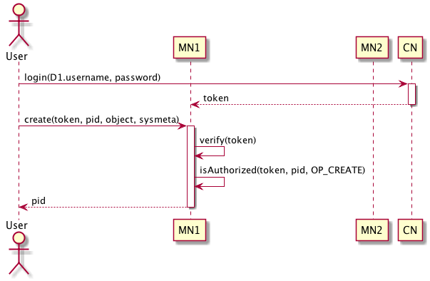

Authorization in DataONE¶
This document outlines the mechanism for specifying authorization policies for objects and service in DataONE and a set of services for controlling access to those objects on Member Nodes and Coordinating Nodes.
Overview¶
Users and services authenticate in DataONE to confirm their identity. The identity is then used for controlling access to objects, systems, and services within the DataONE framework. Requirements for Authorization are listed here:
Privacy and access control in DataONE are primarily for the protection and
integrity of user contributed data and metadata via Member Nodes. There are,
however, other entities in DataONE that also need protection, including DataONE
specific services and system resources, like system metadata and components of
the general software stack (e.g., databases, web servers) for Coordinating and
Member Nodes. For this reason, all resources in DataONE, from data and metadata
objects to system services, have an access policy (Types.AccessPolicy),
made up of one or more access control rules (Types.AccessRule),
that is used to determine who may access the resource. The process of confirming
whether a user has privileges to access a resource in DataONE is called
authorization. The act of authorization uses attribute information contained
in the security token obtained by the user when authenticating with their
identity provider, and compares such information to the resource access control
rule. If the rule permits access by the principal requesting the
resource, then authorization succeeds and permission is granted to access the
resource. The algorithm used to evaluate authorization for a resource is
described in the section Object Access Control below.
Because nodes that form the DataONE federation are managed by various administrative domains and may cross multiple political boundaries, “trust” relationships are crucial for DataONE to succeed in its security plan. In simple terms, this means that access control rules that are defined by one member of the federation are upheld be another member. It also means that trust may be revoked if a particular member does not behave accordingly within the federation. Access control rules may be dynamic and must be propagated with the resource they are designated to protect, such as when data or metadata objects are replicated to another Member Node.
The language that specifies the policy for a given access control rule
dictates only whether a user is allowed access to a given resource; to include
the ability to explicitly deny access to a resource overly complicates
management of the authorization process and is seldom used in practice. Access
rules (Types.AccessRule) consist of the system identity of the user,
also known as the Subject, the type of permission granted (e.g.,
read, write, or changePermission), and the identifier of the
resource being requested.
An access policy is an optional element of the System Metadata
associated with an object. The default access policy is to deny access to the
object to all users except the subject identified as the
Types.SystemMetadata.rightsHolder in the System Metadata.
DataONE will provide, where reasonable, a conversion of the internal access control rule to a subset of one or more industry standard policy languages to support interoperability between different organizations.
Trust Relationships¶
Any authorization system in a federation requires trust among participants. For DataONE, there are five types of trust relationships among nodes in the federation:
MN to CN: Member Nodes need to have trust that Coordinating Nodes will respect and enforce their authorization policies, including any restrictions placed on where and when to create replicas of objects, and on the presentation of search results for restricted content.
CN to MN: Coordinating Nodes rely upon Member Nodes for limited services, and mainly expect Member Nodes to accurately implement the DataONE Service API, including replication services.
CN to CN: Each Coordinating Node contains a replica of the content of the others, and are configured to provide seamless failover and load-balancing for all incoming requests across the three nodes. Consequently, the Coordinating Nodes inherently trust one another fully. As the suite of Coordinating Node instances expands to other continents, this relationship may need to be re-examined.
MN to MN: Member Node to Member Node trust relies on one Member Node believing that another Member Node will respect the authorization policies that they publish for their objects and services. In the case of restricted access content, Member Nodes that house replicas of an object would need to faithfully enforce authorization policies that were expressed by the data owner. Because of this, Member Nodes can express replication policies for objects that indicate which other Member Nodes are acceptable targets for replication, and for which nodes they are willing to serve as replica stores.
User to DataONE: Users trust that the DataONE system, that is, the combination of Member and Coordinating Nodes interacting to provide the DataONE infrastructure and services, implements access control rules consistently and in compliance with the specifications provided when content was added to the system or subsequently modified. This implies minimal latency in propagation of rules between components of the system.
Verification of proper technical implementation of these trust relationships is achieved through integration testing of the various components. This involves exercising a wide array of combinations of users, groups, and access control rules to ensure expected behavior as content moves around the DataONE infrastructure.
The DataNet projects have a loosely defined requirement of interoperability between their respective implementations. This also implies that content and services may be shared between projects, and thus there will likely be additional trust relationships that need to be taken into consideration as the DataNet projects progress towards interoperability.
Object Access Control¶
Access control for content managed by DataONE (Data objects,
Science Metadata objects, and Resource Maps) is determined by
the Types.AccessPolicy entry in the Types.SystemMetadata
associated with the object.
In addition, the rightsHolder of the System Metadata holds all permissions on the object, and the Authoritative Member Node has equivalent privileges as the rightsHolder.
The Authoritative Member Node is identified by one or more Subjects
listed in the Member Node Types.Node record registered in the DataONE
node registry. Thus, the Types.NodeReference entry recorded
in the System Metadata Authoritative Member Node references the Node entry
in the node registry, which in turn contains a list of Subjects that, when
used in a request to access or manipulate an object, identify the user as the
Authoritative Member Node.
Permissions that can be associated with an object include:
- Read
The ability to view the content of this object.
- Write
The ability to change the content of this object via update services. Permissions are hierarchical, so write permission also includes read permission.
- ChangePermission
The ability to change the authorization policies for this object. Includes both read and write permissions.
Conceptually, an Types.AccessRule is a tuple with three components:
an identifier which indicates which object the rule applies to; a subject
which indicates who the rule applies to; and a permission which indicates
the level of access described by the rule.
In practice, the access rule is contained in the System Metadata, and so
each access rule contains a permission and list of subjects. A set of access
rules are contained in the Types.AccessPolicy, and these together
with the rights holder and authoritative member node determine which
subjects may perform operations on an object.
Evaluation of a permission for an object is determined in a manner thus, where SUBJECT is the subject making the request, and PERMISSION is the permission being evaluated:
Is SUBJECT == rightsHolder? Yes -> return True
Is SUBJECT IN authoritiveMemberNode.Subject? Yes -> return True
for each accessRule in accessPolicy
if PERMISSION is IN accessRule.Permission
Is SUBJECT IN accessRule.Subject? Yes -> return True
return False
DataONE supports equivalent identities, where a single principal may have
multiple subjects associated with them. As such, the SUBJECT in algorithm
described above is actually a list of 1 or more subjects. The list of subjects
to be used for comparison is determined from the Session parameter of an API
call as follows:
SUBJECTS = [Session.subject, ]
Adjusting Object Access Control¶
Adjustments to access control for objects is made by altering the
accessPolicy of the Types.SystemMetadata for the object. The
process is to retrieve a current copy of the system metadata from a
Coordinating Node using the CNRead.getSystemMetadata() method, edit the
Types.AccessPolicy entry as necessary, then send the updated
AccessPolicy structure to a Coordinating Node using the
CNAuthorization.setAccessPolicy() method.
Changes to accessPolicy are then propagated to other Coordinating Nodes
through the Coordinating Node replication process (and hence to the search
index), then to the Member Nodes that hold a copy of the object. Member Nodes
are informed of a change to accessPolicy through the
MNStorage.systemMetadataChanged() method which is called by a
Coordinating Node. Member Nodes are expected to update the accessPolicy for
an object as soon as possible after being informed of an update.
Log Record Access Control¶
Access to log records is evaluated in the same manner as access to objects. If the requesting subject does not have read permission for the identifier recorded in the log record, then they will be denied access to the log entry.
Adjustments to access control for log records are made indirectly by adjusting access control for the referenced object(s).
EDIT: Log records are now completely restricted to administrative users so as not to expose raw usage patterns for any/all public objects.
Service Access Control¶
DataONE services are accessed through HTTPS connections. Restrictions on
agents (i.e. clients) that may call the services may be imposed through
network configuration (e.g. restricting IP addresses that may call the
service) or preferably through the restriction property of the
Types.Service entry in the services property of the
Types.Node entry describing the registered Member or Coordinating
Node.
The optional restriction property of the service lists subjects that have permission to invoke the service. If a restriction is not included with the service description, then any agent may call that service endpoint.
NOTE: It is at the discretion of individual Node implementations as to whether these defined service restrictions will be enforced for the method in question. The service method restriction is meant only as a mechanism for node operators to record/manage restrictions to be enforced in a transparent manner.
Adjusting Service Access Control¶
Adjustments to access control for services, or more accurately, the methods
exposed within a service, are made by altering the contents of the
restriction property of the Types.Service entry for the
Types.Node registration document for the node. These adjustments are
made through the CNRegistration.updateNodeCapabilities() method by
specifying a replacement node document. A current version of the node document
should be retrieved from the Coordinating Node through the
CNCore.listNodes() method.
Changes to node registration information can only be performed by subjects
listed in the subject property of the Types.Node document for the
node.
Additional Authorization Constraints¶
- TODO
Need to update this section to cover the additional constraints beyond subject authorization that will limit movement of content between components
Some nodes may also want to conditionally provide access to some services based on a principal’s current usage of a resource such as node storage or node bandwidth.
Create/Update constraints
MaximumStorageQuota
MaximumNetworkTransferQuota
Embargoes
Add ability to specify an embargo period during which the access policies would not be in effect, and rather resources are only privately accessible
Note
Add constraints and embargoes to the AccessPolicy language described below
Access Policy Language¶
- TODO
This section needs to be updated with the latest revisions to the AccessPolicy section. Also need to update / regenerate the example of access policy.
Several existing authorization policy languages were evaluated for use in the DataONE architecture. Given the simplicity of authorization rules that DataONE needs to express, these specifications were deemed overly complex and would impose too signification of a cost on Member Node implementations.
Note
Survey for additional policy languages to evaluate before deciding on a custom specification for DataONE.
DataONE has designed a simple access policy language that can be embedded in several contexts and can be used to express access rules. The definitions of the elements in this AccessPolicy language are:
-
accessPolicy¶ A set of rules that specifies as a whole the allowable permissions that a given user or system has for accessing a resource, including both data and metadata resources and service resources. An access policy consists of a sequence of allow rules that grant permissions to principals, which can be individual users, groups of users, symbolic users, or systems and services.
- Cardinality
1..1
- ValueSpace
- Generated By
Client
-
allow¶ A rule that is used to allow a principal to perform an action (such as read or write) on an object in DataONE. Rules are three-tuples (principal, permission, resource) specifying which permissions are allowed for the principal(s) for the resource(s) listed. Access control rules are specified by the OriginMemberNode when the object is first registered in DataONE. If no rules are specified at that time, then the object is deemed to be private and the only user with access to the object (read, write, or otherwise) is the RightsHolder.
- Cardinality
0..*
- ValueSpace
- Generated By
Client
Note
The ‘deny’ directive has been removed for simplicity, and because a survey of existing member nodes indicates it is not being used by the community.
-
principal¶ The unique identifier representing a principal that is allowed or denied access to a resource. Principal identifiers are strings that are found transported in the subject field of an identifying certificate produced from the authentication system. Users, groups, systems, and services can all be represented as principals.
- Cardinality
1..*
- ValueSpace
Types.Principal- Generated By
Client
-
permission¶ A string value indicating the set of actions that can be performed on a resource as specified in an access policy. The set of permissions include the ability to read a resource, modify a resource (write), and to change the set of access control policies for a resource (changePermission). In addition, there is a permission that controls ability to execute a service (execute).
- Cardinality
1..*
- ValueSpace
- Generated By
Client
-
resource¶ The unique identifier (pid) for a resource in the system to which the access rules in this access policy apply.
- Cardinality
1..*
- ValueSpace
- Generated By
Client
Authorization Services¶
- TODO
Update this section to include the latest revisions to the methods defined for managing and working with the access control for objects.
In this section, define a set of Authorization services to be implemented at CN and MN. The current Authorization Service is defined as a standalone service.
Todo
Link these methods to the generated methods in the API specifications, eliminate redundancy of the description text between the two locations.
isAuthorized(token, pid, action):: boolean
Determine if the user authenticated by the token can take the action specified (read, write, changePermission, execute) on the resource named by the identifier pid.
setAccess(token, Types.AccessPolicy):: void
Set the access policy for a series of resources as specified by the provided AccessPolicy document. The user identified by the authentication token must have changePermission permission on all resources named in the AccessPolicy. If so, then the policies for those resources will be replaced (or created as needed) by the policies specified in AccessPolicy. If the user does not have sufficient permission, then the NotAuthorized exception must be thrown, and none of the policies should be applied (it is not sufficient to have appropriate permissions on just one resource – if permission is not present for all listed resources, then implementations must roll back any changes and return NotAuthorized.
Interaction diagrams¶
- TODO
Need to update authorization use cases and include references to them.
Phase 1¶
Figure 1. Only public objects are searchable and replicated in the system. Create, Read, Update, and Delete operations are controlled by member nodes for private objects, but read for public resources can be handled by any replicating member node, or a coordinating node in the case of metadata resources.
Figure 2. Trust relationships between components during phase 1 of Authz/Authn. Triangle = CN, Rectangle = MN, open circle = public data, filled circle = private data, dashed line = untrusted connection. A Coordinating Node retrieves only public content from a Member Node (A), and only publicly readable content is available to users through the Coordinating Nodes (B) and Member Nodes (C). A Coordinating Node must have a trusted relationship with Member Nodes to request replication operations (E) even though the content being replicated is publicly readable and does not require a trusted connection (D).
Phase 2¶
Figure 3. Trust relationships between components during phase 2 of Authn/Authz. Triangle = CN, Rectangle = MN, open circle = public data, filled circle = private data, dashed line = untrusted connection, solid line = trusted connection, user with hat = authenticated user. Coordinating Nodes synchronize public and private content (A). Authenticated users can retrieve private data from the origin Member Node (B) and can discover and retrieve metadata from the Coordinating Nodes (C). Public content is replicated between Member Nodes (D) under the direction of a trusted connection from the Coordinating Nodes (E).
Phase 3¶
Figure 4. Trust relationships between components during phase 3 of Authn/Authz. Triangle = CN, Rectangle = MN, open circle = public data, filled circle = private data, dashed line = untrusted connection, solid line = trusted connection, user with hat = authenticated user. Member Nodes of compatible technology (D) have a trust relationship that enables transfer of protected content from one member node to another (A). An authenticated user has the same access to private content replicated to other Member Nodes (B). Member Nodes with incompatible technology (i.e. unable to create a trusted relationship) are only able to replicate public content (C). Coordinating Nodes must have trusted relationships to all Member Nodes (E) to direct replication.
Phase 4¶
TBD
Issues¶
Located At CN or MN?
At CN requires global knowledge of ACLs
At CN requires a lot of network traffic for authorization on objects
At MN makes authorization of search results impossible
Compromise: Federated, each authoritative MN for an object keeps its ACL list, which gets synchronized to the CN at sync time
Assume most object write is at MN level, so best to not have to go to CN
Assume MN will want to control their own write access
Requires MN Authorization services
Efficiency of search results authorization
Need to authorize large number of search results in each operation
Has implications for search results cacheing

Table of Contents
- Authorization in DataONE